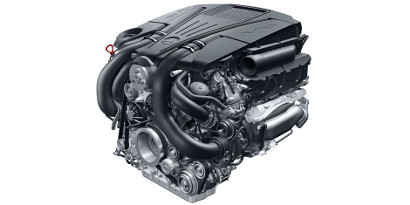
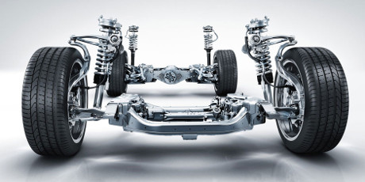
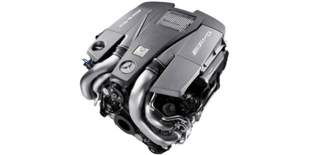

Performance

Responds in the moment, accelerates the future.
Two Direct Injection biturbo V-8s. A Plug-In HYBRID teaming a biturbo V-6 and torque-rich electric motor. And a pair of superlative V-12s. From ultralow emissions to ultra-high power, the S-Class engines accelerate the pace of progress. And from hybrid efficiency to AMG handcrafting, they turn fuel and air into both motion and emotion.

Reads the road, bypasses the bumps.
No matter which S-Class you choose, its suspension offers a choice of modes, adaptive damping and automatic leveling. S550 models tame the road with lightweight, quick-thinking AIRMATIC®. And the available camera-assisted MAGIC BODY CONTROL® is an industry first. It can actually see bumps ahead, and act to quell them in real time.
Turns slip into grip, and grip into go.
The advanced all-wheel drive of the S550 4MATIC continually sends the engine´s torque to the wheels that can use it best. Lightweight, nimble and efficient, 4MATIC® enhances handling and performance in any season. Standard AMG Performance 4MATIC gives the AMG S63 an edge in grip and acceleration, brilliantly putting power to pavement.

Turns slip into grip, and grip into go.
The advanced all-wheel drive of the S550 4MATIC continually sends the engine´s torque to the wheels that can use it best. Lightweight, nimble and efficient, 4MATIC® enhances handling and performance in any season. Standard AMG Performance 4MATIC gives the AMG S63 an edge in grip and acceleration, brilliantly putting power to pavement.